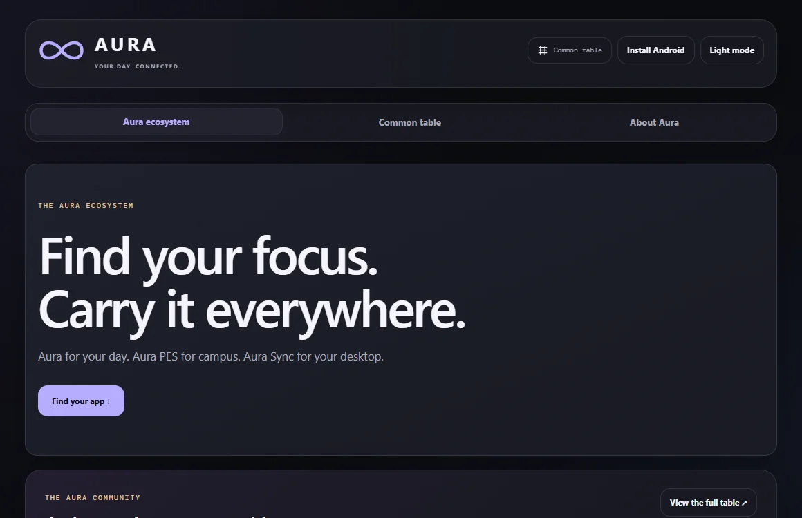
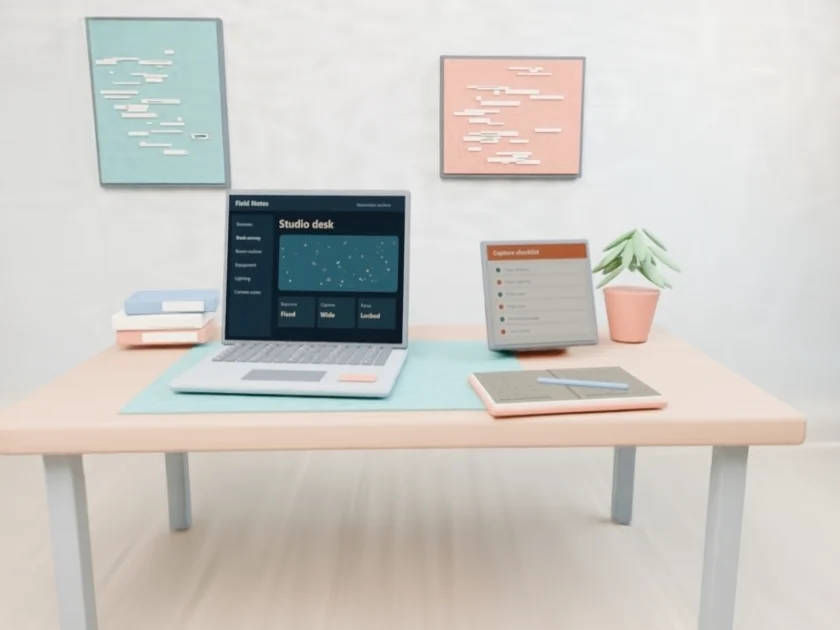
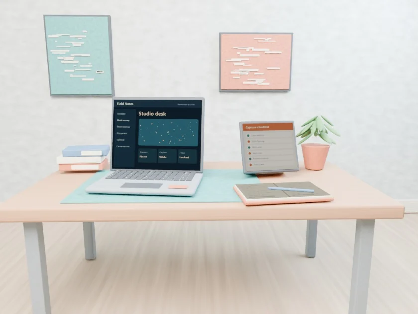
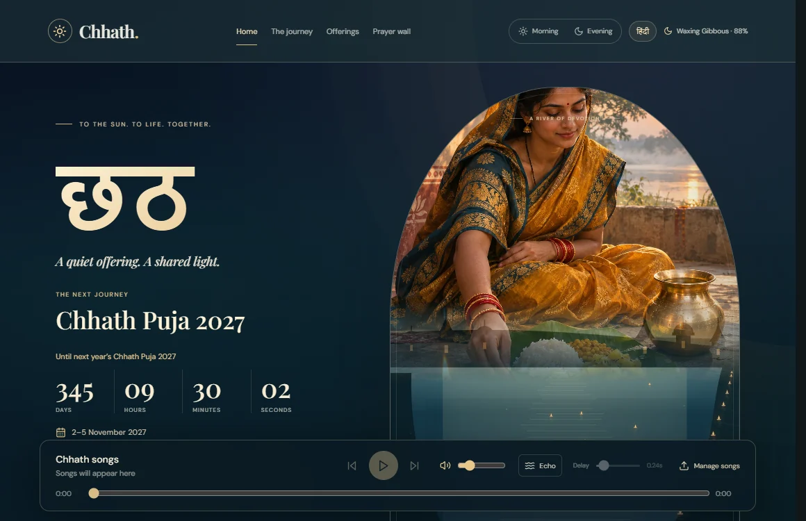

Web app
Aura
A family of focus apps for daily planning, campus, and desktop. The daily planner includes searchable activities, missions, and a focus timer.
Developer · B.Tech student
I build web apps and explore how software can reconstruct 3D scenes, connect devices, and make complex systems easier to use.

Web app
A family of focus apps for daily planning, campus, and desktop. The daily planner includes searchable activities, missions, and a focus timer.


Input photoGaussian splat3D reconstruction
A local app that turns photos and video into interactive 3D scenes. I started with object detection and textured meshes, then added GPU Gaussian splatting.

Cultural guide
A guide to the four-day Chhath Puja journey, with the rituals, offering preparation, and prayers in one place.
Messaging experiment
An experimental two-person messenger with browser and Android clients, media sharing, and voice and video calls.
I’m a B.Tech student at PES University in Bengaluru. I like following projects through the whole stack, from the interface people use to the code that handles data, communicates over a network, or runs a model locally.
Reach out about a project, collaboration, or opportunity.